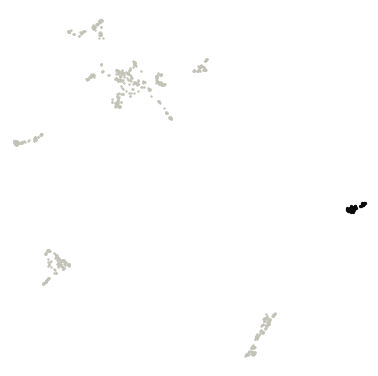
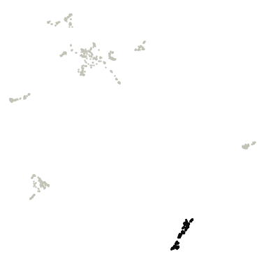
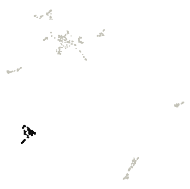
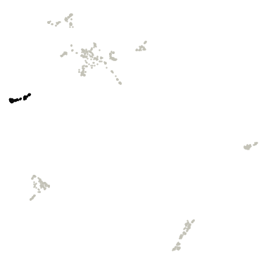
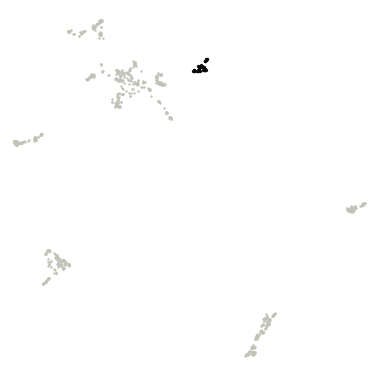
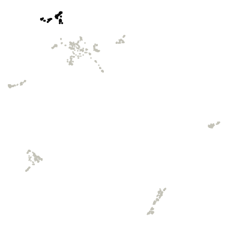
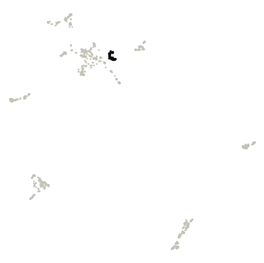
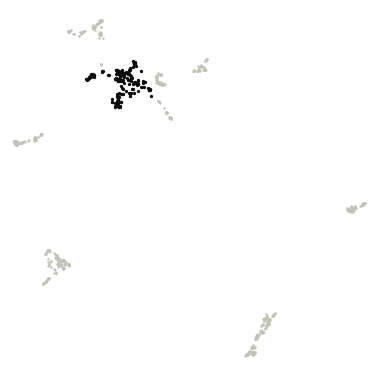

Vaginal vs Urinary
Vaginal and urinary genomes shown two ways: by their DNA sequence (DNABERT-S embeddings) and by their gene content (eggNOG gene families), each with its own clusters, plus a test of which gene families differ between the two microbiomes.
DNA-embedding map (DNABERT-S)
Genomes are placed by DNABERT-S embeddings of their DNA sequence, so genomes with similar sequence composition sit close together. Treat it as a visual impression of genetic similarity, not a measure of evolutionary distance.
Hover a point for its details. Click a legend entry to hide it; double-click to show only that entry (double-click again to show all). Drag to zoom; double-click the plot to reset. The smaller microbiome is drawn on top with a black outline. Grey points are outliers that HDBSCAN did not assign to any cluster. Open full screen.
Clusters varied between random runs; treat cluster assignments with caution. Across 5 runs with different random seeds, the map gave 3-8 clusters (mean agreement 0.55, lowest 0.25; Adjusted Rand Index).
| Cluster | Genomes | Vaginal | Urinary |
|---|---|---|---|
| Cluster 0 | 159 | 149 (94%) | 10 (6%) |
| Cluster 1 | 44 | 42 (95%) | 2 (5%) |
| Cluster 2 | 44 | 44 (100%) | 0 (0%) |
| Cluster 3 | 61 | 25 (41%) | 36 (59%) |
| Cluster 4 | 65 | 65 (100%) | 0 (0%) |
| Cluster 5 | 120 | 117 (98%) | 3 (2%) |
| Cluster 6 | 158 | 145 (92%) | 13 (8%) |
| Cluster 7 | 128 | 127 (99%) | 1 (1%) |
| Outliers | 72 | 72 (100%) | 0 (0%) |
Functional map (eggNOG gene families)
Here genomes are placed by what their genes do. Each genome is described by the relative abundance of 7,518 eggNOG gene families (each family's share of the genome's genes), and genomes with similar profiles (Bray–Curtis dissimilarity) sit close together.
Hover a point for its details. Click a legend entry to hide it; double-click to show only that entry (double-click again to show all). Drag to zoom; double-click the plot to reset. The smaller microbiome is drawn on top with a black outline. Grey points are outliers that HDBSCAN did not assign to any cluster. Open full screen.
Clusters were mostly consistent across random runs; boundaries may shift slightly. Across 5 runs with different random seeds, the map gave 7-8 clusters (mean agreement 0.88, lowest 0.75; Adjusted Rand Index). Agreement between these functional clusters and the DNA-embedding clusters: Adjusted Rand Index 0.47 (1 = identical groupings, 0 = unrelated), computed on the 90% of genomes that are in a cluster on both maps.
Top 10 COG gene families in each functional cluster
How they are chosen. Enrichment is the mean relative abundance of a COG family in the cluster's genomes divided by its mean in all other clustered genomes of this view. Only families present in at least 10% of the cluster's genomes are ranked, so one-off genes can't top the list. "In this cluster" is the share of the cluster's genomes carrying the family. The ranking is descriptive; no per-cluster test is applied. 34 outlier genomes are excluded. The top 50 per cluster are in functional_cluster_top_cog_terms.csv.

Cluster 0 · 60 genomes
| COG | Description | Enrichment | In this cluster | In other clusters |
|---|---|---|---|---|
| COG5624 | beta-galactosidase activity | 814× | 83% | 0% |
| COG5185 | Phage-related minor tail protein | 364× | 70% | <1% |
| COG4986 | Binding-protein-dependent transport system inner membrane component | 63× | 75% | 2% |
| COG4213 | Periplasmic binding protein domain | 33× | 92% | 7% |
| COG3879 | Bacterial protein of unknown function (DUF881) | 30× | 98% | 6% |
| COG3856 | small basic protein | 23× | 88% | 6% |
| COG4284 | Uridylyltransferase | 21× | 88% | 8% |
| COG4850 | Uncharacterized conserved protein (DUF2183) | 17× | 90% | 10% |
| COG0400 | carboxylic ester hydrolase activity | 16× | 90% | 13% |
| COG1261 | Involved in the assembly process of the P-ring formation. It may associate with FlgF on the rod constituting… | 16× | 88% | 11% |

Cluster 1 · 134 genomes
| COG | Description | Enrichment | In this cluster | In other clusters |
|---|---|---|---|---|
| COG3281 | Trehalose synthase | 298× | 55% | <1% |
| COG4044 | May play a role in the intracellular transport of hydrophobic ligands | 292× | 68% | <1% |
| COG4425 | Alpha/beta-hydrolase family N-terminus | 205× | 49% | <1% |
| COG4759 | protein conserved in bacteria containing thioredoxin-like domain | 185× | 39% | <1% |
| COG4981 | Domain of unknown function (DUF3367) | 183× | 37% | <1% |
| COG5278 | phosphoserine phosphatase activity | 182× | 41% | <1% |
| COG5650 | integral membrane protein | 165× | 56% | <1% |
| COG5329 | Domain of unknown function (DUF4032) | 161× | 34% | <1% |
| COG2047 | PAC2 family | 160× | 35% | <1% |
| COG4760 | Bax inhibitor 1 like | 155× | 95% | <1% |

Cluster 2 · 129 genomes
| COG | Description | Enrichment | In this cluster | In other clusters |
|---|---|---|---|---|
| COG5107 | Domain of Unknown Function (DUF349) | 592× | 85% | 0% |
| COG4704 | Fibrobacter succinogenes major domain (Fib_succ_major) | 286× | 95% | <1% |
| COG4797 | Motility related/secretion protein | 199× | 60% | <1% |
| COG3489 | Psort location CytoplasmicMembrane, score | 180× | 46% | <1% |
| COG1730 | unfolded protein binding | 175× | 28% | 0% |
| COG3488 | Di-haem oxidoreductase, putative peroxidase | 163× | 52% | <1% |
| COG3746 | phosphate-selective porin O and P | 161× | 89% | 1% |
| COG1747 | Gliding motility protein | 115× | 18% | 0% |
| COG3292 | Histidine kinase | 98× | 74% | <1% |
| COG4121 | Psort location Cytoplasmic, score | 93× | 22% | 0% |

Cluster 3 · 69 genomes
| COG | Description | Enrichment | In this cluster | In other clusters |
|---|---|---|---|---|
| COG2863 | Cytochrome c | 584× | 48% | 0% |
| COG4535 | Mg2 and Co2 transporter CorC | 276× | 77% | 0% |
| COG2916 | Belongs to the histone-like protein H-NS family | 273× | 58% | 0% |
| COG4566 | helix_turn_helix, Lux Regulon | 269× | 35% | <1% |
| COG2927 | Part of the beta sliding clamp loading complex, which hydrolyzes ATP to load the beta clamp onto primed DNA… | 233× | 80% | <1% |
| COG2914 | Belongs to the UPF0125 (RnfH) family | 228× | 68% | 0% |
| COG2969 | Stringent starvation protein B | 220× | 75% | <1% |
| COG3539 | Fimbrial protein | 218× | 52% | <1% |
| COG2980 | Together with LptD, is involved in the assembly of lipopolysaccharide (LPS) at the surface of the outer… | 216× | 77% | <1% |
| COG3028 | Belongs to the UPF0307 family | 215× | 80% | <1% |

Cluster 4 · 52 genomes
| COG | Description | Enrichment | In this cluster | In other clusters |
|---|---|---|---|---|
| COG4892 | Cytochrome B5 | 123× | 56% | <1% |
| COG1719 | Protein of unknown function (DUF2507) | 70× | 90% | 3% |
| COG4814 | Alpha/beta hydrolase of unknown function (DUF915) | 48× | 88% | 5% |
| COG4836 | Protein of unknown function (DUF1146) | 33× | 81% | 4% |
| COG4633 | Cupredoxin-like domain | 32× | 81% | 4% |
| COG4997 | phosphoribosyl-ATP pyrophosphohydrolase | 30× | 31% | <1% |
| COG2746 | Aminoglycoside 3-N-acetyltransferase | 28× | 40% | 2% |
| COG4334 | Uncharacterized protein conserved in bacteria (DUF2255) | 27× | 13% | 1% |
| COG4851 | sex pheromone | 25× | 96% | 6% |
| COG5585 | COG3209 Rhs family protein | 24× | 19% | 1% |

Cluster 5 · 94 genomes
| COG | Description | Enrichment | In this cluster | In other clusters |
|---|---|---|---|---|
| COG4699 | Protein of unknown function (DUF1033) | 289× | 71% | <1% |
| COG2514 | Glyoxalase/Bleomycin resistance protein/Dioxygenase superfamily | 145× | 70% | <1% |
| COG4838 | Belongs to the UPF0358 family | 144× | 32% | 0% |
| COG4550 | Belongs to the UPF0342 family | 143× | 33% | 0% |
| COG5582 | UPF0302 domain | 141× | 31% | 0% |
| COG4707 | Domain of unknown function (DUF771) | 107× | 27% | <1% |
| COG4072 | Protein of unknown function C-terminal (DUF3324) | 104× | 15% | <1% |
| COG4195 | Poly-gamma-glutamate hydrolase | 102× | 11% | 0% |
| COG4837 | Protein of unknown function (DUF1462) | 92× | 20% | 0% |
| COG4347 | Protein of unknown function (DUF1405) | 86× | 20% | 0% |

Cluster 6 · 50 genomes
| COG | Description | Enrichment | In this cluster | In other clusters |
|---|---|---|---|---|
| COG5389 | Protein of unknown function (DUF721) | 209× | 44% | <1% |
| COG3847 | Flp Fap pilin component | 199× | 80% | <1% |
| COG2359 | Stage V sporulation protein S (SpoVS) | 160× | 66% | <1% |
| COG3881 | protein conserved in bacteria | 120× | 78% | 1% |
| COG2939 | Serine carboxypeptidase | 77× | 62% | 2% |
| COG3947 | Transcriptional regulatory protein, C terminal | 59× | 66% | 2% |
| COG1430 | Uncharacterized ACR, COG1430 | 50× | 74% | 2% |
| COG1933 | Double zinc ribbon | 49× | 76% | 2% |
| COG5265 | ATP-binding cassette subfamily B | 44× | 22% | 1% |
| COG3116 | cell division | 25× | 66% | 8% |

Cluster 7 · 229 genomes
| COG | Description | Enrichment | In this cluster | In other clusters |
|---|---|---|---|---|
| COG1768 | Ser Thr phosphatase family protein | 302× | 58% | <1% |
| COG3432 | Domain of unknown function (DUF4364) | 213× | 39% | <1% |
| COG4752 | SAM-dependent RNA methyltransferase | 129× | 17% | <1% |
| COG3359 | Predicted 3'-5' exonuclease related to the exonuclease domain of PolB | 113× | 40% | <1% |
| COG2163 | COG2163 Ribosomal protein L14E L6E L27E | 111× | 40% | <1% |
| COG1308 | Domain of unknown function (DUF4342) | 99× | 21% | <1% |
| COG1244 | Elongator protein 3, MiaB family, Radical SAM | 99× | 17% | <1% |
| COG2811 | AsmA-like C-terminal region | 96× | 17% | <1% |
| COG1630 | NurA | 91× | 18% | <1% |
| COG3874 | Sporulation protein YtfJ | 75× | 35% | <1% |
What differs between vaginal and urinary genomes?
For each eggNOG gene family, a two-sided Mann-Whitney U test compares its relative abundance (its share of a genome's genes) between the two microbiomes. P-values are corrected for all 7,518 tests with the Benjamini–Hochberg false discovery rate.
Every gene family tested
How to read this. The effect size (rank-biserial correlation, −1 to +1) says how consistently one microbiome ranks higher: +1 means every urinary genome has more of the family than every vaginal genome, −1 the reverse, 0 no tendency. With many genomes even tiny differences reach significance, so families are highlighted only with q < 0.05 and an effect of at least 0.3. "In vaginal genomes" is the share of vaginal genomes carrying the family at all.
Top 25 gene families higher in vaginal genomes
Sorted by effect size. All results: comparison_mannwhitney.csv.
| Gene family | Description | In vaginal genomes | In urinary genomes |
Per 1,000 genes (vaginal) | Per 1,000 genes (urinary) | Effect size | q-value |
|---|---|---|---|---|---|---|---|
| COG0621 | Catalyzes the methylthiolation of N6- (dimethylallyl)adenosine (i(6)A), leading to the formation of 2-… | 76% | 58% | 1.16 | 0.36 | -0.48 | 9.3e-09 |
| COG0441 | Catalyzes the attachment of threonine to tRNA(Thr) in a two-step reaction L-threonine is first activated by… | 94% | 98% | 0.98 | 0.54 | -0.47 | 2.9e-08 |
| COG2812 | DNA polymerase III is a complex, multichain enzyme responsible for most of the replicative synthesis in… | 94% | 98% | 0.93 | 0.49 | -0.45 | 7.3e-08 |
| COG0674 | ferredoxin oxidoreductase | 60% | 29% | 0.77 | 0.12 | -0.45 | 2.5e-08 |
| COG0606 | Mg chelatase-like protein | 74% | 49% | 0.58 | 0.23 | -0.45 | 7.3e-08 |
| COG0037 | Belongs to the TtcA family | 93% | 98% | 0.92 | 0.55 | -0.43 | 3.7e-07 |
| COG0484 | molecular chaperone DnaJ | 96% | 100% | 1.31 | 0.76 | -0.43 | 4.5e-07 |
| COG0635 | Involved in the biosynthesis of porphyrin-containing compound | 84% | 82% | 0.89 | 0.46 | -0.43 | 4.7e-07 |
| COG0016 | Belongs to the class-II aminoacyl-tRNA synthetase family. Phe-tRNA synthetase alpha subunit type 1 subfamily | 90% | 95% | 0.70 | 0.45 | -0.41 | 1.9e-06 |
| COG0534 | Mate efflux family protein | 90% | 89% | 2.22 | 0.92 | -0.39 | 3.7e-06 |
| COG0465 | Acts as a processive, ATP-dependent zinc metallopeptidase for both cytoplasmic and membrane proteins. Plays a… | 95% | 98% | 0.95 | 0.57 | -0.39 | 5.5e-06 |
| COG1185 | Involved in mRNA degradation. Catalyzes the phosphorolysis of single-stranded polyribonucleotides… | 86% | 83% | 0.69 | 0.42 | -0.39 | 5.5e-06 |
| COG0768 | Penicillin-binding Protein | 97% | 100% | 1.68 | 1.12 | -0.38 | 6.3e-06 |
| COG0206 | Essential cell division protein that forms a contractile ring structure (Z ring) at the future cell division… | 93% | 98% | 0.75 | 0.51 | -0.38 | 7.5e-06 |
| COG0817 | Nuclease that resolves Holliday junction intermediates in genetic recombination. Cleaves the cruciform… | 68% | 49% | 0.51 | 0.23 | -0.38 | 6.4e-06 |
| COG2177 | Part of the ABC transporter FtsEX involved in asymmetric cellular division facilitating the initiation of… | 75% | 66% | 0.56 | 0.30 | -0.37 | 1.2e-05 |
| COG0322 | The UvrABC repair system catalyzes the recognition and processing of DNA lesions. UvrC both incises the 5'… | 93% | 100% | 0.96 | 0.67 | -0.37 | 1.5e-05 |
| COG0466 | ATP-dependent serine protease that mediates the selective degradation of mutant and abnormal proteins as well… | 52% | 28% | 0.42 | 0.08 | -0.37 | 4.0e-06 |
| COG0343 | Catalyzes the base-exchange of a guanine (G) residue with the queuine precursor 7-aminomethyl-7-deazaguanine… | 85% | 85% | 0.64 | 0.42 | -0.37 | 1.6e-05 |
| COG0124 | histidyl-tRNA synthetase | 90% | 98% | 0.69 | 0.48 | -0.36 | 1.8e-05 |
| COG2509 | Oxidoreductase | 39% | 3% | 0.36 | 0.02 | -0.36 | 6.9e-07 |
| COG0821 | Converts 2C-methyl-D-erythritol 2,4-cyclodiphosphate (ME-2,4cPP) into 1-hydroxy-2-methyl-2-(E)-butenyl… | 67% | 49% | 0.46 | 0.21 | -0.36 | 1.3e-05 |
| COG0772 | Belongs to the SEDS family | 96% | 100% | 1.36 | 0.98 | -0.36 | 2.1e-05 |
| COG0018 | Arginyl-tRNA synthetase | 92% | 98% | 0.72 | 0.50 | -0.36 | 2.2e-05 |
| COG1774 | PSP1 C-terminal domain protein | 48% | 18% | 0.35 | 0.07 | -0.36 | 3.4e-06 |
Top 25 gene families higher in urinary genomes
Sorted by effect size.
| Gene family | Description | In vaginal genomes | In urinary genomes |
Per 1,000 genes (vaginal) | Per 1,000 genes (urinary) | Effect size | q-value |
|---|---|---|---|---|---|---|---|
| COG0477 | TIGRFAM drug resistance transporter, EmrB QacA subfamily | 86% | 100% | 4.42 | 8.15 | +0.51 | 1.4e-09 |
| COG1263 | Pts system | 44% | 86% | 0.89 | 1.77 | +0.48 | 8.7e-10 |
| COG3711 | CAT RNA binding domain | 30% | 75% | 0.43 | 1.15 | +0.47 | 3.0e-11 |
| COG0626 | Cys/Met metabolism PLP-dependent enzyme | 40% | 85% | 0.31 | 0.69 | +0.47 | 6.6e-10 |
| COG2141 | COG2141 Coenzyme F420-dependent N5,N10-methylene tetrahydromethanopterin reductase and related… | 30% | 75% | 0.39 | 0.98 | +0.46 | 5.5e-11 |
| COG3091 | Belongs to the SprT family | 17% | 66% | 0.09 | 0.27 | +0.46 | 8.6e-15 |
| COG0431 | NADPH-dependent FMN reductase | 43% | 89% | 0.46 | 0.94 | +0.46 | 3.7e-09 |
| COG1113 | Amino acid permease | 41% | 86% | 0.59 | 1.19 | +0.44 | 9.4e-09 |
| COG0656 | aldo keto reductase | 49% | 91% | 0.57 | 1.04 | +0.43 | 6.3e-08 |
| COG2723 | Belongs to the glycosyl hydrolase 1 family | 28% | 69% | 0.47 | 1.11 | +0.43 | 5.7e-10 |
| COG0454 | This enzyme acetylates the N-terminal alanine of ribosomal protein S18 | 96% | 100% | 3.09 | 4.55 | +0.42 | 5.7e-07 |
| COG1230 | Cation efflux family | 41% | 92% | 0.29 | 0.54 | +0.42 | 4.4e-08 |
| COG1249 | Dihydrolipoyl dehydrogenase | 62% | 85% | 0.74 | 1.30 | +0.42 | 3.6e-07 |
| COG0028 | COG COG0028 Thiamine pyrophosphate-requiring enzymes acetolactate synthase, pyruvate dehydrogenase… | 55% | 94% | 0.57 | 0.97 | +0.42 | 3.0e-07 |
| COG0604 | COG0604 NADPH quinone reductase and related Zn-dependent oxidoreductases | 35% | 77% | 0.36 | 0.77 | +0.42 | 1.6e-08 |
| COG4116 | Adenylate cyclase | 11% | 55% | 0.07 | 0.26 | +0.42 | 1.8e-16 |
| COG1309 | Psort location Cytoplasmic, score 8.87 | 89% | 97% | 2.90 | 4.20 | +0.41 | 1.2e-06 |
| COG5503 | Belongs to the UPF0356 family | 13% | 57% | 0.08 | 0.26 | +0.41 | 5.9e-15 |
| COG1434 | DUF218 domain | 37% | 82% | 0.29 | 0.55 | +0.41 | 4.4e-08 |
| COG1072 | Pantothenic acid kinase | 30% | 77% | 0.17 | 0.38 | +0.41 | 7.0e-09 |
| COG0364 | Catalyzes the oxidation of glucose 6-phosphate to 6- phosphogluconolactone | 38% | 89% | 0.25 | 0.46 | +0.41 | 9.1e-08 |
| COG2813 | Methyltransferase small domain | 37% | 89% | 0.27 | 0.50 | +0.40 | 7.1e-08 |
| COG1254 | Belongs to the acylphosphatase family | 29% | 75% | 0.15 | 0.32 | +0.40 | 7.9e-09 |
| COG4479 | Belongs to the UPF0346 family | 11% | 54% | 0.07 | 0.25 | +0.40 | 4.0e-15 |
| COG4471 | Uncharacterized protein conserved in bacteria (DUF2129) | 12% | 55% | 0.07 | 0.25 | +0.40 | 2.7e-14 |